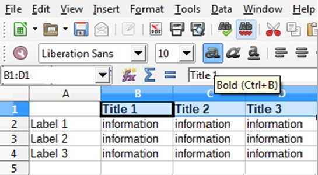

Create a simple spreadsheet in LibreOffice using the spreadsheet application, Calc.
Pre-requisites
1 computer with LibreOffice
Steps
Open LibreOffice either from the Start menu or the desktop icon.
Using the menu bar on the left, select Calc Spreadsheet.
NOTE: This will open a blank, untitled Calc screen.
Under File in the Menu toolbar, click Save As.... Enter the desired filename of your spreadsheet and click Save.
Insert the appropriate titles, labels, and information for your spreadsheet into the blank cells by clicking on the desired cell (it will outline in black) and immediately typing (Figure 7).
NOTE: Remember to save frequently while you work by clicking File: Save.
Figure 1. Figure 7: The general structure of a spreadsheet input in LibreOffice Calc. Typing will occur in the outlined cell.
Navigate to other cells using the pointer, keyboard arrows, or Enter key.
Use Calc toolbars to format your spreadsheet to the desired form, e.g. making the titles bold (Figure 8).
Figure 2. Figure 8: Using Calc toolbars to format the titles (highlighted) of a spreadsheet to be bold.

Upon completion, click File: Save to save your final spreadsheet.
NOTE: The keyboard shortcut "Ctrl + S" can also be used.